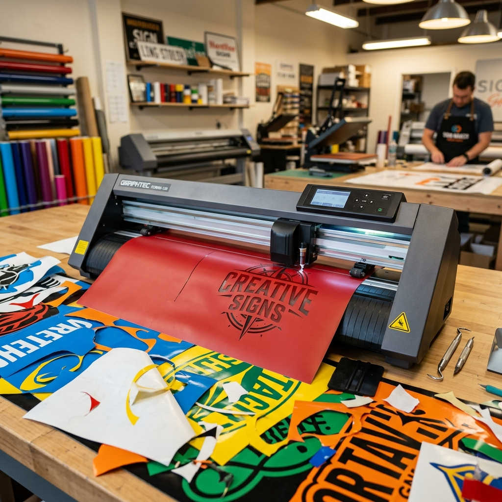

Vectorized typography: when to expand and when not to

There's a quiet decision in every signage project that rarely gets discussed: the moment you convert your text into outlines (or "expand" the typography). It looks like a trivial click, but that decision determines whether your file will produce cleanly or whether you'll spend the night fixing errors with the machine sitting idle.
Here's how we think about it in real production.
What "expanding" typography means
While your text is still text, the file holds references to the font: name, weight, kerning. When you expand it (Type → Create Outlines in Illustrator, or Convert to Curves in Corel), the text stops being text and becomes pure vector shapes. Lines. Bézier curves. Geometry the machine can cut.
It's a one-way road: once expanded, you can no longer edit it as text.
When you SHOULD expand
These are the scenarios where expanding is mandatory or strongly recommended:
- Before sending to production. The CNC doesn't understand fonts. If your final file has live text and the machine doesn't have the font installed, it will substitute it with Arial or something worse. Always expand before exporting G-Code.
- When you're going to do pathfinder or boolean operations. Operations like union, subtraction, or intersection require real geometry. Live text can't be combined with other paths.
- When you're going to edit individual letters. Stylizing a "G" to make a logotype, deforming an "S" along a curve — all of that needs outlines.
- When you hand the file to someone without the font. If you send your .ai to a client or to another part of the workshop, expand first. Keeps the file from looking different on different computers.
- When the text is finalized. If the copy is approved and nobody's going to change it, you can expand. Reduces font-error risk.
When NOT to expand (yet)
This is where most people get it wrong:
- While you're still revising with the client. If you expand and then they ask to change "Restroom" to "Bathroom", you have to retype from scratch, fix kerning, and redo the layout. Keep text live until final approval.
- Before validating ADA. Engravity can read live text and detect height, contrast, and non-ADA-compliant typography problems. Once expanded, the validator treats it as generic geometry and loses precision.
- If you're going to auto-generate Braille. The UEB Grade 2 Braille translator needs the live text to know what to translate. Once expanded, Braille would have to be generated manually.
- When working with a multilingual system. If your sign has Spanish, English, and French versions, keeping text live lets you swap languages without redrawing anything.
The professional workflow: two files
What we do in production is keep two versions of the same project:
- Working file with live text. The one you edit, validate, translate, and show to the client.
- Production file with everything expanded. Generated at the end, just before exporting G-Code or sending to cut. Never edited.
Three mistakes we see every week
- Expanding before validating ADA. The report comes out with phantom errors because the validator doesn't recognize the letters as typography.
- Forgetting to expand before G-Code. The machine substitutes the font and the client receives a sign with the wrong typography.
- Expanding and then "un-expanding" by adding text on top. You end up with two different typography layers in the same file. The machine cuts both.
Closing
Expanding typography is like saving a file in a different format: once it's done, there's no easy going back. The mental rule we use is simple: edit with live text, produce with outlines. And those two steps shouldn't happen at the same time.
A small decision, but it defines the difference between a calm workflow and a night fixing things in the workshop.